Fennica
To search Fennica data in Finna
library(finna)
fennica <- search_finna("*",filters=c('collection:"FEN"'))
print(fennica)## # A tibble: 100 × 8
## Title Author Year Language Formats Subjects Library Series
## <chr> <chr> <chr> <chr> <chr> <chr> <chr> <chr>
## 1 Teknologian arviointej… Markk… 2003 fin Kirja,… teknolo… 3AMK-k… Edusk…
## 2 Työsuojelusanasto = Ar… Sanas… 2006 fin Kirja,… Diction… 3AMK-k… TSK
## 3 Terveyden edistämisen … Kiisk… 2008 fin Kirja,… alkohol… 3AMK-k… Sosia…
## 4 Nuorten terveystapatut… Rimpe… 2007 fin Kirja,… altistu… 3AMK-k… Sosia…
## 5 Mahdollisuuksien ikkun… Holma… 2008 fin Kirja,… Turun a… 3AMK-k… Turun…
## 6 Mini-intervention jalk… Seppä… 2008 fin Kirja,… Communi… 3AMK-k… Sosia…
## 7 Pysytään työssä : vaik… Suomi… 2008 fin Kirja,… vajaaku… 3AMK-k… Sosia…
## 8 Tulevaisuus meissä : k… Lampi… 2009 fin Kirja,… kotital… Diakon… Opetu…
## 9 Kaupunkiluontoa kaikil… Laine… 2009 fin Kirja,… kaupunk… 3AMK-k… Tutki…
## 10 Suomalaisen aikuisväes… Helak… 2011 fin Kirja,… terveys… Diakon… Rapor…
## # ℹ 90 more rowsBulk data
In order to download the whole data we can add the parameter
limit = Inf as
search_finna("*",filters=c('collection:"FEN"'), limit = Inf)
Checking the total counts
search the whole data and it total search of counts in the the interval between some years for example between the years 1809-1917 as follows:
library(finna)
fennica <- search_finna("*",filters = c('collection:"FEN"', 'search_daterange_mv:"[1809 TO 1918]"'))
print(fennica)## # A tibble: 100 × 8
## Title Author Year Language Formats Subjects Library Series
## <chr> <chr> <chr> <chr> <chr> <chr> <chr> <chr>
## 1 "Finland i bilder = Su… Inha,… 1896 mul Kirja,… NA Aalto-… NA
## 2 "Suomen tärkeimpien ko… Tie- … 1911 fin Kirja,… NA Aalto-… NA
## 3 "Tietoja Karjalan raut… Schvi… 1893 fin Kirja,… NA Jyväsk… Suome…
## 4 "Förhandlingarna vid F… NA 1892 swe Kirja,… naisasi… Jyväsk… NA
## 5 "Suomen muinaismuisto-… NA 1890 fin Kirja,… arkeolo… Helka-… Suome…
## 6 "Bound biblio parent r… Appel… 1891 fin Kirja,… NA Jyväsk… NA
## 7 "Till \"Fänrik Ståls s… Ekman… 1869 swe Kirja,… NA Kansal… NA
## 8 "Lauseita Jak. Juteini… Jutei… 1844 fin Kirja,… NA Helka-… NA
## 9 "Haltia : helmikuun 2 … NA 1881 fin Kirja,… NA Helka-… NA
## 10 "Kesämatkoja Venäjän K… L. W.… 1898 fin Kirja,… arkeolo… Helka-… Suome…
## # ℹ 90 more rowswe can check the whole data count
library(finna)
fennica <- search_finna("*",filters = c('collection:"FEN"', 'search_daterange_mv:"[1809 TO 1918]"'))
result_count <- attr(fennica, "result_count")
print(result_count)## [1] 56420Visualization for fennica
We can use any of the functions provided to visualize the data
library(finna)
fennica <- search_finna("*",filters = c('collection:"FEN"', 'search_daterange_mv:"[1809 TO 1918]"'))
refined_data <- refine_metadata(fennica)
visualize_author_distribution(refined_data)
fennica <- search_finna("*",filters = c('collection:"FEN"', 'search_daterange_mv:"[1809 TO 1918]"'))
refined_data <- refine_metadata(fennica)
visualize_word_cloud(refined_data, "Title")